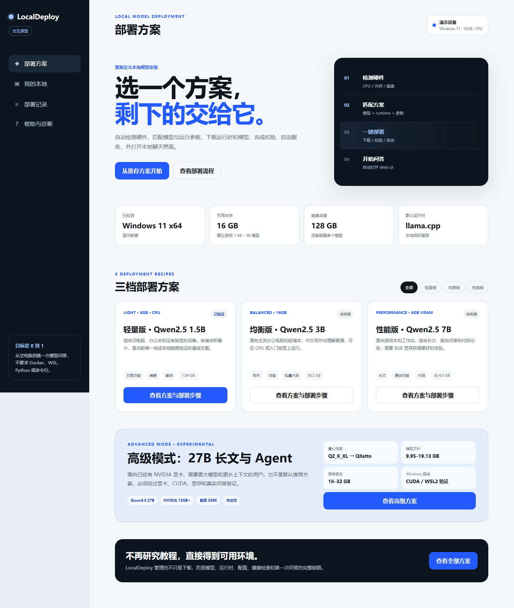

01已验证基线
轻量版
Qwen2.5 1.5B Instruct
适合旧电脑、办公本和无独显设备，先把第一句回答跑出来。
8GB 内存CPU1.04GB 模型
查看方案 ↗
PRIVATE AI · LOCAL FIRST
自动检测硬件、匹配可运行的部署方案，完成下载、校验、启动，然后把本地 Web UI 直接交到你手里。
Qwen2.5 3B · 16GB 内存
DEPLOYMENT RECIPES
用户不需要先理解参数规模。LocalDeploy 以“硬件档位 + 模型 + 运行参数”作为一个完整方案。
Qwen2.5 1.5B Instruct
适合旧电脑、办公本和无独显设备，先把第一句回答跑出来。
Qwen2.5 3B Instruct
给主流办公电脑和轻薄本更自然的中文写作与问答体验。
Qwen2.5 7B Instruct
面向游戏本和工作站，覆盖长文、复杂问答和代码任务。
Qwen3.8 27B
面向高显存 NVIDIA 设备的长文与 Agent 方案。按显存选择 Q2_K_XL、UD-Q4_K_M 或 Q8attn，不进入默认推荐。
FROM ZERO TO CHAT
不是把教程丢给用户，而是让程序完成环境判断、下载、校验、启动和验证。
Windows 版本、CPU、内存、显存、磁盘和端口一次确认。
根据硬件推荐方案，并明确哪些模型不能运行。
下载 runtime 和模型，断点续传并校验 SHA256。
拉起 llama.cpp，检查健康状态，自动打开本地 Web UI。

产品界面概念稿 · 非最终版本WHY LOCALDEPLOY
模型平台已经很多，真正消耗时间的是硬件判断、版本兼容、下载失败和启动排错。
每个方案绑定模型、量化、runtime、文件和哈希，拒绝“下载完再说”。
把错误定位到下载、显存、文件校验、端口或启动阶段，而不是只报一句失败。
模型、文档和对话留在本机，本地 Web UI 默认只监听回环地址。
FOR TEAMS
从模型选型、硬件评估、私有部署到知识库接入和长期维护，LocalDeploy 正在把这些重复交付沉淀成标准化服务。
FAQ
本地部署不是魔法，重要的是知道什么能做、什么暂时不能做。
默认三档方案以 Windows 原生 llama.cpp 为目标，不要求 Docker、WSL、系统 Python 或命令行。高级 Qwen3.8 27B 方案需要 NVIDIA CUDA，可能使用 WSL2 路线，单独标注为实验性。
轻量版面向 8GB 内存和无独显设备；均衡版面向 16GB 主流电脑；性能版需要 8GB 显存；高级版面向 12GB+ NVIDIA 设备，建议 18–32GB 显存。
它需要更大的显存、固定版本的 llama.cpp、CUDA/WSL2 和更大的磁盘空间。12GB 显存只能做 Q2 短任务，24GB 以上才适合较完整的 Q4 长上下文配置。
平台设计目标是本地推理，服务只监听 127.0.0.1。对话和上传资料不会经过 LocalDeploy 的云端；具体模型和数据目录都由用户控制。
目前是网站和部署引擎开发阶段，Windows 内测入口会先通过申请和小范围验证开放，避免把未完成的安装器当成正式产品发布。